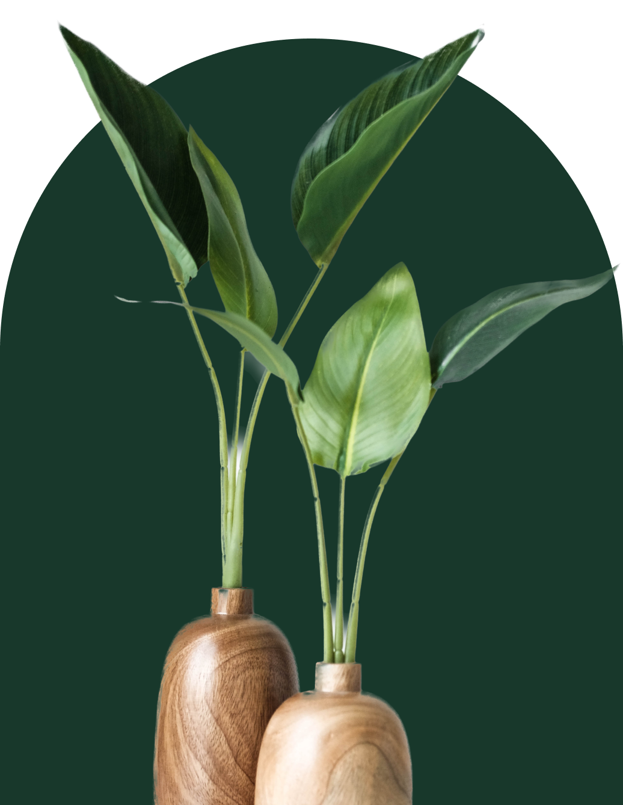

Home
Browse
Wishlist
Elevate Your Environment with Everlasting Beauty
Browse Plants

Your Urban Oasis Awaits!
Let us help you create your DREAM garden space.
Previous
Next
Best Indoor Plants
Snake Plant:
A hardy plant that tolerates low light and requires minimal maintenance.
Pothos:
A trailing plant that's great for beginners and comes in various leaf patterns.
ZZ Plant:
A low-maintenance plant that can tolerate low light and irregular watering.
Peace Lily:
Known for its elegant white flowers and air-purifying properties.
Spider Plant:
Easy to care for and produces "pups" that can be propagated.
Best Outdoor Plants
Lavender:
Fragrant and beautiful, lavender thrives in sunny, well-drained areas.
Rosemary:
A versatile herb that adds both culinary and ornamental value to gardens.
Geraniums:
Colorful and low-maintenance flowering plants available in various hues.
Sunflowers:
These tall, cheerful flowers are easy to grow and attract pollinators.
Marigolds:
Bright and vibrant flowers that deter pests and add a pop of color to garden beds.
Best of both worlds
Spider Plant:
Is known for its air-purifying abilities and produces "pups" that can be easily propagated.
Geraniums:
Colorful flowering plants that can thrive in both indoor pots and outdoor garden beds.
Basil:
A popular culinary herb, basil can be grown indoors on a sunny windowsill or outdoors in a garden.
Pothos:
A trailing plant that's well-suited for indoor hanging baskets or outdoor planters in shaded areas.
Aloe Vera:
A succulent plant that can thrive both indoors and outdoors.